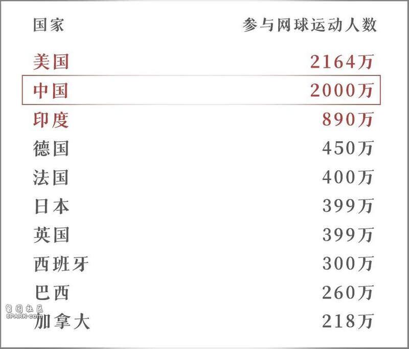
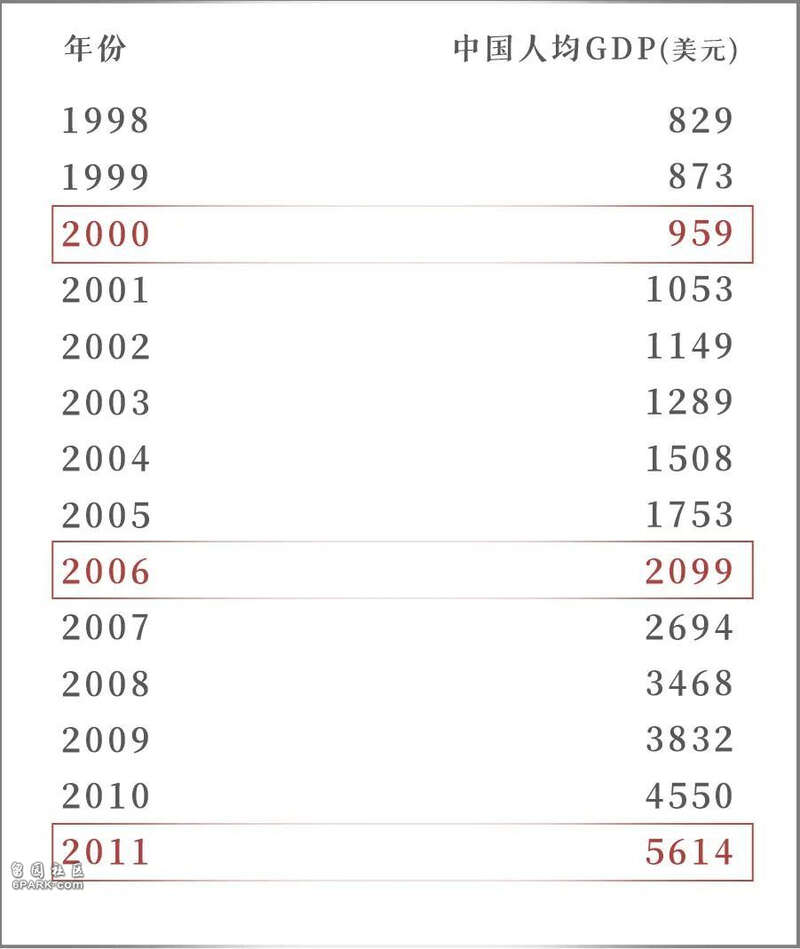
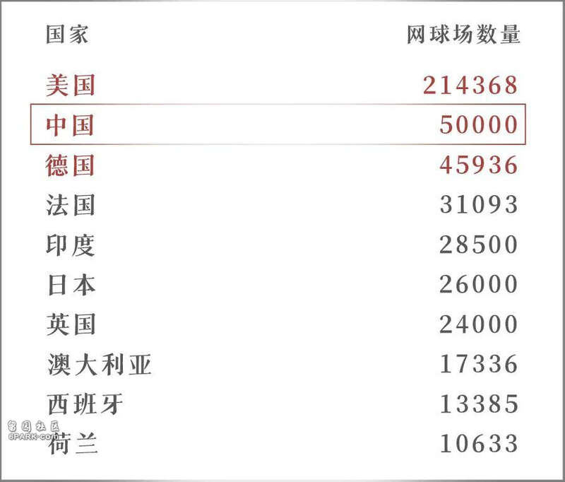
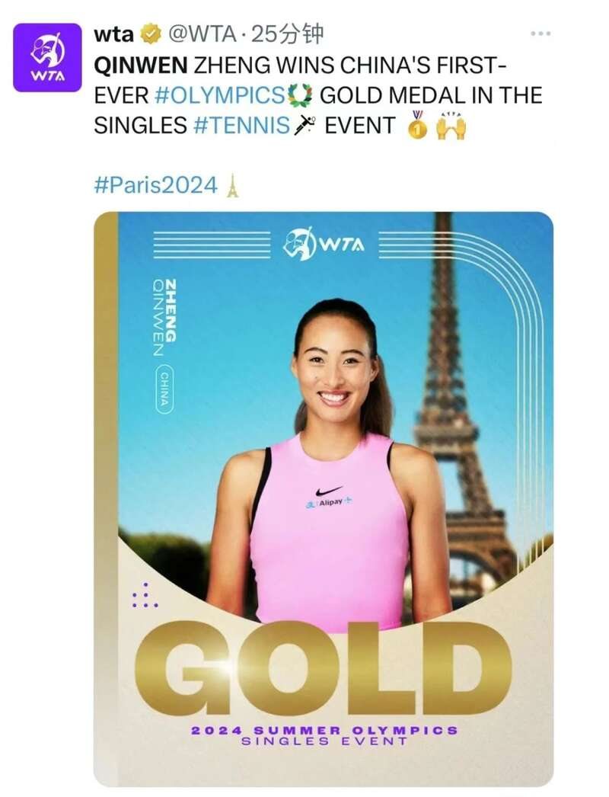

在一记漂亮的正手击球后，郑钦文躺倒在巴黎罗兰·加洛斯网球场的红土上，张开双臂迎接她的，是亚洲的第一个奥运会网球女子单打冠军。
很多平时不关注网球的朋友们可能会感到非常惊讶，认为郑钦文获得的这枚网球女单金牌是中国代表团的意外之喜。毕竟网球是职业化程度高、参与国家多、竞争激烈的项目，中国并非传统网球强国，拿到一枚网球女单金牌实在太难了
然而了解网球的人都知道，这枚金牌是中国网球发展水到渠成的事情。
近年来，网球在中国飞速普及。根据国际网球联合会（ITF）发布的《2021年全球网球报告》，2020年中国就有约2000万人参与（每年至少打一次）网球运动，是全球网球参与人数第二的国家。
参考：ITF Global Tennis Report 2021▼

有如此强大的群众基础，中国代表团在今年奥运会网球项目拿下一金一银也就顺理成章了。
而且不仅是这届奥运会，中国人还会在未来各项网球赛事上持续取得优异成绩。
因为中国人正在疯狂打网球。
中国，曾经是“网球荒漠 ”
郑钦文的这枚金牌，并不是中国第一枚奥运网球金牌。
早在20年前，中国组合李婷/孙甜甜就拿下了雅典奥运会网球女子双打金牌。
不过那时的中国网球培养模式，仍然是传统的以奥运会、亚运会成绩为主要目标的举国体制。
因为网球运动需要专业的训练团队，是那时的中国选手个人难以负担的，举国体制下培养运动员，成本较低，可以减轻运动员的经济负担。
而且当时中国网球群众基础很差，据中国市场与媒体研究，2004年内地网球爱好者只有197万人，称为“网球荒漠”并不夸张。
网球是中产阶级的运动，而2004年中国人均GDP才突破1500美元，网球爱好者较少才是正常现象——网球装备价格不菲，场地要求也比较严格规范，不像羽毛球有空地就能打。
如此有限的网球爱好者数量，想要快出成绩，也就只能举国体制，想办法找到突破口。早在上世纪末，为了在亚运会和奥运会上拿到好成绩，中国网球协会就提出“以女子为重点，女子双打为突破口”的战略指导思想。
这是因为女子双打竞争烈度相对较低，容易出成绩，符合举国体制下中国代表队弯道超车的“小、巧、难、女、少”原则，即小众项目、技巧性项目、难度大的项目、女子项目和比赛人数少的项目。
雅典奥运会的女双金牌，意味着举国体制下找突破口的办法取得了成功，此后也涌现出了一些高水平女子网球运动员。
像李娜就在2008年北京奥运会上打进了女子单打四强，取得了在郑钦文之前这个项目上中国的最好成绩。
然而，也正是因为运动员水平越来越高，举国体制也遭受了质疑，迎来了改变。
十多年前，种下热爱网球的种子
中国网球运动员实力强起来了，举国体制就显现出其局限性。
在举国体制下，各级运动队主要面向全运会、亚运会和奥运会等比赛，而网球是高度市场化的项目，运动员想要出成绩、拿到国际上的名次，全球范围内的四大满贯和公开赛远比全运会重要。
所以在比赛取舍上，顶级运动员就与举国体制产生了冲突。
想要精进技术，个性化、针对化的训练必不可少，然而举国体制下仍然是集训模式，不利于运动员打破实力天花板。
运动员想要花钱雇团队帮助自己训练，但奖金和商业收入的绝大部分需要上缴。而当选手成绩越来越好，他们也就有底气突破举国体制，尝试为自己的运动生涯负责。
终于在2009年，网球运动管理中心放开“单飞”模式，运动员可以自己管理训练和比赛，相应的奖金和商业收入绝大部分归运动员所有，实现自负盈亏。
“单飞”后，一些网球运动员的成绩取得了更大突破，比如李娜拿下了两个大满贯赛事女子单打冠军，成为中国第一个赢得网球大满贯单打项目冠军的运动员。
这批运动员的崛起也适逢其时。
根据世界上的经验，当人均GDP超过3000美元时，文化体育消费会快速增长。李娜闯入奥运会网球女子单打四强的2008年，中国人均GDP刚好超过3000美元。
当人均GDP超过5000美元，文化体育消费进一步加速。李娜拿下法网单打冠军的2011年，中国人均GDP刚好超过5000美元。

而根据中国市场与媒体研究的调研数据，2007年中国内地网球爱好者增长到约400万人，2010年初则达到1200万人。
经济不断增长，让民众有条件参与网球。李娜等人取得的优异成绩，也激励着更多人参与到网球运动中。
“当娜姐打破这道屏障后，你会发现原来我们也是可以达到的，她把不可能变为可能，这是很重要的一点”，郑钦文提到了李娜“第一次”对自己的巨大意义。
鼓励十多年前的孩子、现在处于当打之年的中国网球选手的，还有充分市场化的网球运动里，顶尖运动员的巨额收入——早在2012年，李娜就有高达1820万美元的年收入。
家长，让孩子拼命卷网球
作为李娜粉丝的郑钦文，在李娜首度捧起大满贯奖杯的罗兰·加洛斯体育场，十多年后拿到奥运金牌，这就是传承。
比李娜幸运的是，郑钦文在更小的年纪就出国交流训练，也早早拿下了商业代言。
郑钦文的职业生涯商业化、国际化程度都要高很多。
早在去年，郑钦文比赛奖金收入170万美元，赞助收入550万美元，合计高达720万美元，相当于近5200万元人民币。拿下奥运冠军后，郑钦文的收入有望创出新高。
然而郑钦文这样在全球训练、参赛的职业运动员，需要维持稳定的训练团队（包括教练、训练师和康复师等），每年至少花费300万元。虽然在出圈前的商业赞助能弥补一部分开支，但还是需要家庭的大规模投入。
这就是“单飞”的另一面，收益很大，风险也非常大，需要家庭经济上的强力支持。
想在职业赛事中混出名堂，超强天赋、厚实的家底和一往无前的决心，缺一不可。风浪越大，鱼越贵。
虽然成本很高，困难重重，但在中国，想要去世界上拼网球天赋的富裕家庭还不少。据报道，赴欧美练习网球的国内家庭估计在50-80户左右。
考虑到能去欧美练球，已经是有不错天赋的青年选手了，哪怕他们中只有十分之一的人能成为全球顶级选手，在未来几年里也是5-8人左右的中国超级天团。
对于没有顶级天赋的青少年，学好网球对升学也很有帮助。
国内升学，可以通过体育单招和高水平运动队的路子降低高考录取难度。
国外升学，网球也是简历上拿得出手的爱好。网球是一项国际化程度很高的运动，外国人热爱网球，简历上的网球赛事成绩是不错的加分项。
在中国，一项运动要是能抓住家长的心，上可以名利双收，下可以帮助升学，这项目必然会在他们的孩子中发展迅猛。
软肋都给捏到位了。
中国未来的优秀网球选手，就是在大基数的参与者中卷出来的，那可都是家长殷切的期望和真金白银的付出。
中国网球市场，被盯上了
即便不考虑打职业赛事或是升学等目标，普通网球爱好者也可以单纯享受运动的乐趣，尤其是经济条件好了，网球装备相对没那么贵了，网球场也越来越多——中国网球场数量也排到了世界第二。
参考：ITF Global Tennis Report 2021▼

随着郑钦文带来的网球热度，如今一些地方的网球场已经爆满，很难预约到了。
其实算算就知道，中国网球场绝对数量虽然世界第二，但人均网球场数量还是很低，中国人的网球热情高涨，还需要更多场地释放。
而且中国人均GDP早已迈过1万美元门槛，这之后就是文化体育产业进一步发展的时期。此时郑钦文夺得奥运会冠军，正好能够激励更多中国人参与网球。
如果随着经济进一步发展，中国参与网球运动人口占总人口的比例能达到日本水平，那么中国未来将有约4000万人参与网球，是现在的两倍。
这可是规模高达2000万人、未来还有2000万人潜力的超大网球运动市场。
也难怪ITF和国际女子职业网联（WTA）在社交网站上祝贺郑钦文夺冠了。

这些国际网球机构看中的，是郑钦文背后巨大的中国市场。
在急需开拓的潜力新兴市场，出现了这样一位实力强、形象好、号召力大的代言人，对于中国和网球都是大幸。
其他市场化运动就没有这么幸运了。
比如足球，国际足联主席因凡蒂诺曾经说过，希望中国成为全球足球强国之一。可是中国男足就是踢不进世界杯正赛，让足球在国内缺乏出圈效应，因凡蒂诺也只能看着中国市场干着急。
也就只有巴西总统卢拉这样的国际友人，愿意看看中超联赛，并且说几句好话了。